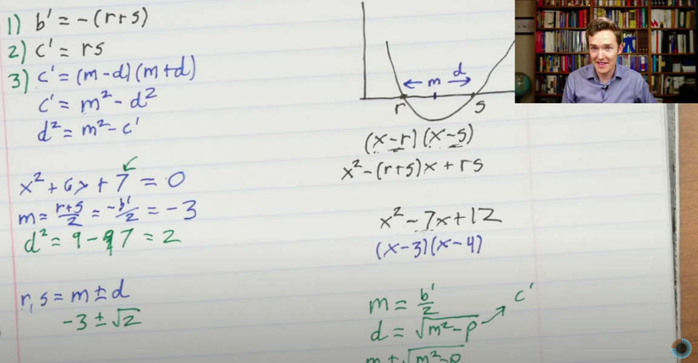

Data Structures and Structured Data
WDYM, data structures?
We will keep it casual and skip formal definitions for now. 👀
Data structures give us principled ways to stow away information. It’s important to do this nicely based on what you want to do with the information.
For example, the notes you might be taking in this class is information. If you have no plans of revisiting them later, you can take them as you please, or better yet, not take them at all!
However, you want your notes optimised for giving you quality company during a 2AM revision session on exam day, competing with Maggi for attention, you want your notes to be competently taken: they don’t have to be neat, and it’s enough for them to be useful.
On the other hand, if you are taking notes so that a special someone who will inevitably miss a few classes will almost certainly ask for later, then you would be making notes to impress, and that potentially requires a different approach.
We’ll equip ourselves with ideas that will ultimately help you decide questions like: how do you organise the clothes in your cupboard?
| Throw ’em in, nobody’s looking | Keep it where you can find it later | |
|---|---|---|
| Time to process | Negligible | Forever |
| Time to retrieve | Forever | Negligible |
Table 1. No free lunches.

Representing Polynomials
Let’s say that you are spending a fine evening watching the #LockdownMath playlist from 3blue1brown. The first episode happens to be all about solving quadratics:

Now, it’s quite natural to want to “write a program”, so to speak, that can take a quadratic equation such as x^2 - 7x + 12 as input and output its two roots.
Given that programs running on your phone are able to make suggestions, even if dubious, for what series to binge-watch next on Netflix, finding roots of quadratics should be a fairly benign exercise.
You might recall that most programs let you declare variables that can hold on to specific types of information, for instance: numbers, strings, and so forth. Our input doesn’t “look” like a number, so it would be a fair take to simply store it as a string:
px = "x^2 - 7x + 12";
While this is a perfectly faithful representation, you can imagine that it would be slightly painful to work with. You would have to write some code that can “pull out” the parts of the string that represent the numbers you care about (in this example, b = -7 and c = 12), so that you can move on to your calculation, which is an expression involving numbers.
Given that a quadratic with the leading coefficient normalized to one is uniquely determined by two numbers, it seems a lot simpler to directly represent the polynomial as two integers instead:
px_b = -7
px_c = 12You might appreciate that this saves us quite some circus and we can quite directly get to the computation we’re interested in. What if you cared about higher order polynomials? You may want to solve them (even if you run out of expressions for solutions pretty quickly, you might be interested in other ways of getting to the roots), or manipulate them in other ways (for example, by adding or multiplying them).
How would you represent higher-order polynomials? What about multivariate polynomials? Is there a way that you might be able to capture an algebraic expression for a polynomial without either using strings or just the coefficients?
Representing a Game - I
The game of 100 goes like this: I pick a number between 1 and 10, and then you pick one within the next ten numbers, and on and on. The first person to reach 100 wins.
...whoever starts has a way of winning the game:
0. To begin with, I say 1.
1. No matter what number you pick, I can say 12.
2. No matter what number you pick, I can say 23.
3. No matter what number you pick, I can say 34.
4. No matter what number you pick, I can say 45.
5. No matter what number you pick, I can say 56.
6. No matter what number you pick, I can say 67.
7. No matter what number you pick, I can say 78.
8. No matter what number you pick, I can say 89.
9. No matter what number you pick, I can say 100.What if you want to write a program that mimics the winning strategy?
Note that this game can go on for at most a 100 steps, and in fact exactly 20 steps (or ten rounds) when you employ said winning strategy. So one way to go about this is to declare 20 variables to track the 20 numbers exchanged between the players. But a moment’s reflection may reveal that you don’t need to store anything at all.
Can you write a program that makes the first move, prompts the user for their moves on their turn, uses the winning strategy discussed above, and uses no variables for explicit storage?
Representing a Game - II
If you missed the first class you haven’t played the Game of Trust, you are welcome to take a break and experience it now. Let’s recollect the setup:
Suppose you want to implement your own version of this game, where the program responds to inputs from the user and plays according to a specific, pre-meditated strategy. Remember you have seen some strategies already:
We reproduce these strategies below:
- COPYCAT: Hello! I start with Cooperate, and afterwards, I just copy whatever you did in the last round. Meow.
- ALWAYS CHEAT: The strong shall eat the weak.
- ALWAYS COOPERATE: Let’s be best friends <3
- GRUDGER: Listen, pardner. I’ll start cooperatin’, and keep cooperatin’, but if y’all ever cheat me, I’LL CHEAT YOU BACK TIL THE END OF TARNATION.
- DETECTIVE: First: I analyze you. start: Cooperate, Cheat, Cooperate, Cooperate. If you cheat back, I’ll act like Copycat. If you never cheat back, I’ll act like Always Cheat, to exploit you. Elementary, my dear Watson.
Let’s say that your program is designed to play 5 rounds and that your program is playing the copycat strategy. To begin with, you might want to declare a couple of variables to keep track of the scores of the players, and ten variables to track the moves of both players in each round. With this, your code may start out looking like this:
my_points = 0
user_points = 0
user_move_1 = input("Input 1 for Cooperate and 0 for Cheat.")
//Sanity check input:
if(user_move_1 != 1 and user_move_1 != 0):
express disappointment and abort// My first move is to cooperate:
my_points += -1
user_points += 3
if(user_move_1):
my_points += 3
user_points -= 1Now your next move is determined by the value of user_move_1, so you might proceed as follows.
user_move_2 = input("Input 1 for Cooperate and 0 for Cheat.")
//Sanity check input:
if(user_move_2 != 1 and user_move_2 != 0):
express disappointment and abort// My next move is based on the user's first:
if(user_move_1):
my_points += -1
user_points += 3
if(user_move_2):
my_points += 3
user_points -= 1…and so on and on, you get the drift.
Do you really need ten variables to track the game? If you were instead implementing the always cheat or always cooperate strategy, how many variables would you need? What about the strategies of the grudger and the detective?
Now, suppose we come up with our own player, whom we call the majority mover. This player looks at your entire game history, and cooperates if you have cooperated more than you have cheated, and cheats if you have cheated more than you have cooperated, and acts randomly otherwise.
It seems like implementing the majority mover strategy would really require keeping track of everything. Or would it? You might observe at this point that it’s enough to keep track of two counts: the number of rounds and the number of moves where the user has cheated: note that it does not matter when the cheats happened in the history of the game.
…track the number of cooperate moves along with the number of rounds; or the number of cheat moves and the number of cooperate moves.
At this point it’s a matter of taste :)
How about a completely random player? This one chooses a number K between 1 and N uniformly at random (let’s not worry about how this is done for now, because that would be a story for another day), where N is the number of rounds played so far; and mimics the other player’s Kth move. To implement this strategy, you really would need to keep track of the user’s entire game history with the five variables, and also assume that you have a way of picking a number at random.
Finally, consider that instead of fixing your program to play five rounds — 🥱 — you want to politely ask the user how many rounds they want to play.
Well, for the first few players, this is just a matter of upgrading your for loop (which you should have switched to already when you realised that you don’t need all. those. variables.) to use N: and you are done.
How will you implement this version if you are working with our latest player? If you happen to have a very enthusiastic user who asks for half a million rounds, would you be able to declare that many variables all at once, while your program is running? Notably, you don’t know what the user is going to say ahead of time!
Representing a subset of a deck of cards
If you are implementing a card1 game, you might need a mechanism for keeping track of “hands”, or various subsets of cards. Let’s say a hand is a subset of cards. For many games, you would need the ability to be able to quickly:
- tell if a particular card belongs to a hand or not,
- add a card to a hand,
- remove a card from a hand, and
- replace a card in a hand with another one.
One way to meet these requirements is to declare a collection of 52 boolean (i.e, true/false or 0/1) variables to represent the hand: the cards in the hand are set to true while cards that don’t belong are set to false.
What do you like about this method? What don’t you like about it?
Here’a another way, though: you could agree on a notation for the cards in the deck: e.g, a standard one is to use a number, A/J/Q/K to denote the value, and S/C/D/H to denote the suit, so every card can be represented as a pair of characters. For example the Ace of Diamonds would be AD, the five of spades would be 5S and the King of Hearts would be KH. With this in place, you could represent a hand also by simply concatenating these string representations of the cards in the hand.
What do you like about this method? What don’t you like about it?
Now for this toy example, if you were to implement both methods and clock the time taken to implement the four operations above, you may not notice a major difference. However, for actual applications, you may be in a situation where your subsets (here, the “hands”) may be coming from a large universe (here, the “deck”). On the other hand, you may have a very large number of operations to take care of efficiently.
Are there other ways that you might want to store this kind of information, given the things you want to do are as enlisted above?
Your choice of method will again be driven by the requirements: the one thing to keep in mind is that you cannot have it all, but we can usually get pretty damn close!
Footnotes
Assume you are working with the standard 52-card deck.↩︎